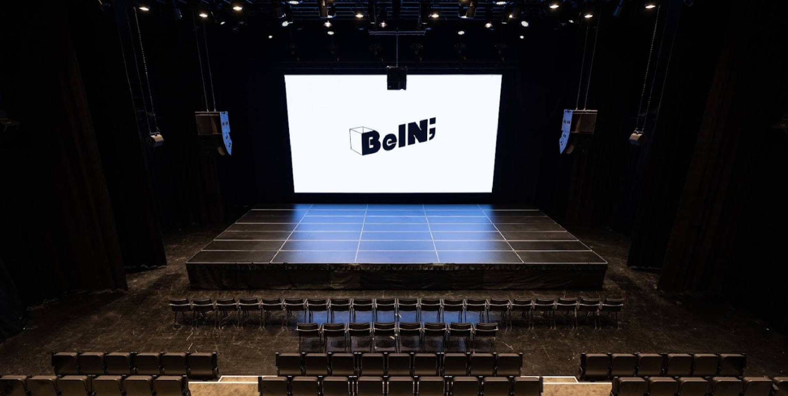

제주콘텐츠진흥원
Be IN; (비인)
글로벌 포럼, IR 피칭, 기업 전시존, 비즈밋업 상담존이 하나의 동선 안에서 이어지는 JGCF 2026의 메인 행사 공간입니다.
구글맵에서 보기
글로벌 포럼, IR 피칭, 기업 전시존, 비즈밋업 상담존이 하나의 동선 안에서 이어지는 JGCF 2026의 메인 행사 공간입니다.
구글맵에서 보기제주특별자치도 제주시 신산로 82 제주콘텐츠진흥원 내 1층
문예회관 후문 정류장 이용
동광양 방면: 간선 201, 221, 231, 260, 311, 335, 336, 341, 342, 348, 349 / 지선 415, 422, 424, 465 / 심야버스 3006
인화초등학교 방면: 간선 201, 211, 221, 231, 260, 311, 335, 336, 341, 342, 348, 349 / 지선 415, 421, 423, 466 / 심야버스 3006, 3007